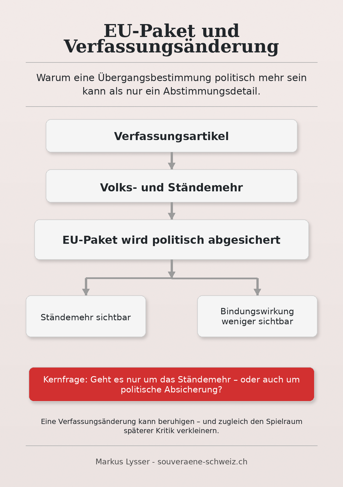
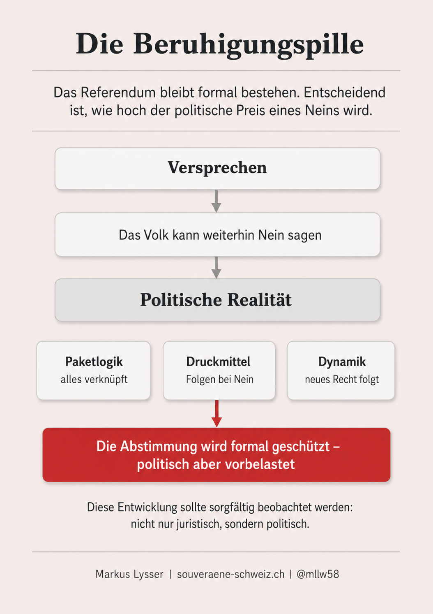
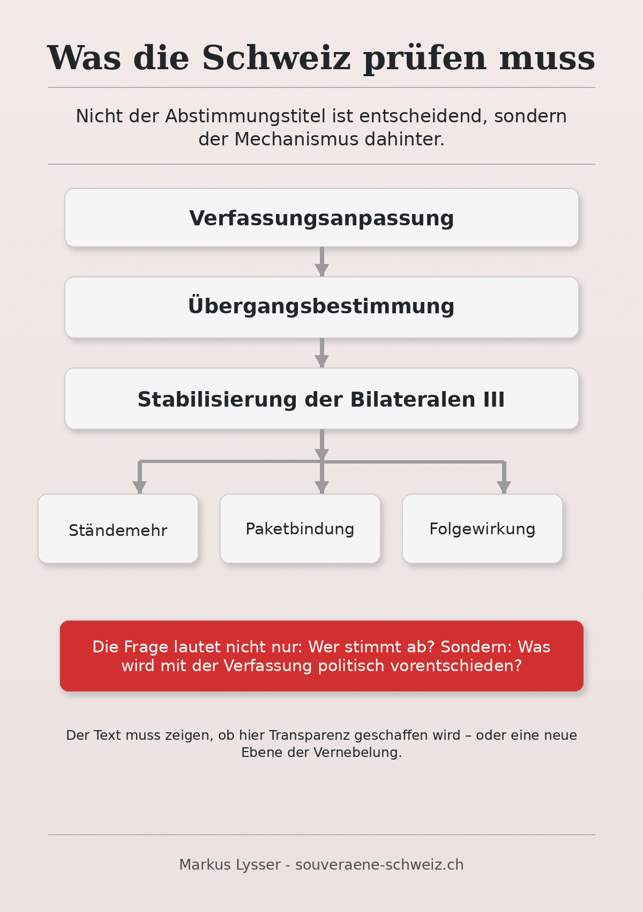

Kurzfassung
Die Diskussion um das EU-Vertragspaket dreht sich nicht mehr nur um den Inhalt der Bilateralen III. Zunehmend geht es um die demokratische Hürde, nach der darüber abgestimmt werden soll.
Die Staatspolitische Kommission des Ständerats will den Hauptteil des EU-Pakets mit einer Übergangsbestimmung in der Bundesverfassung verknüpfen. Damit wäre zwingend ein obligatorisches Referendum nötig: Volk und Stände müssten zustimmen.
Politisch ist das brisant. Der Bundesrat möchte das EU-Paket nach bisheriger Linie ohne Ständemehr vors Volk bringen. Die Kommissionsmehrheit will hingegen eine Verfassungsgrundlage schaffen, welche die Ratifizierung der neuen Abkommen ausdrücklich erlaubt und zugleich heikle Fragen zur Zuwanderung und zum Vorrang des Schweizer Rechts regelt.
Im Zentrum stehen drei Punkte:
- Das EU-Paket soll verfassungsrechtlich abgesichert werden.
- Art. 121a BV zur eigenständigen Zuwanderungssteuerung soll für die neuen Abkommen entschärft oder ausdrücklich relativiert werden.
- Die Schubert-Praxis soll für Konflikte zwischen Schweizer Recht und EU-Abkommen ausdrücklich verankert werden.
Die entscheidende Frage lautet deshalb nicht nur: Soll die Schweiz das EU-Paket annehmen? Sondern auch: Warum braucht es überhaupt eine Verfassungsanpassung? Geht es tatsächlich nur darum, das Ständemehr sauber einzubeziehen – oder soll mit einer neuen Übergangsbestimmung zugleich ein politisch heikles Vertragspaket verfassungsrechtlich so abgesichert werden, dass zentrale Einwände zur Zuwanderung, zur Rechtsübernahme und zur direkten Demokratie entschärft wirken?

Worum es politisch geht
Das EU-Paket enthält neue institutionelle Elemente: dynamische Rechtsübernahme, Streitbeilegung, Ausgleichsmassnahmen und eine stärkere Einbindung der Schweiz in die Rechtsentwicklung der EU.
Besonders heikel ist dies im Bereich der Personenfreizügigkeit. Dort besteht bereits heute ein Spannungsverhältnis zu Art. 121a BV. Dieser Verfassungsartikel verlangt eine eigenständige Steuerung der Zuwanderung und verbietet grundsätzlich neue völkerrechtliche Verträge, die diesem Ziel widersprechen.
Mit dem EU-Paket würde die Schweiz jedoch zusätzliche Verpflichtungen eingehen. Dazu gehören unter anderem Elemente der Unionsbürgerrichtlinie, erweiterte Aufenthaltsrechte und eine dynamische Rechtsübernahme im Bereich der Personenfreizügigkeit.
Genau hier setzt der Vorschlag der Ständeratskommission an: Wenn das EU-Paket mit der bestehenden Verfassung kollidieren könnte, soll nicht der Vertrag angepasst werden. Vielmehr soll die Verfassung so ergänzt werden, dass der Vertrag ratifiziert werden kann.
Klartext: Die Verfassungsänderung wäre nicht bloss eine technische Ergänzung. Sie wäre der politische Schlüssel, um das EU-Paket trotz verfassungsrechtlicher Spannungen abzusichern.
Warum das Ständemehr plötzlich zentral wird
Bei einem fakultativen Referendum entscheidet nur das Volksmehr. Das bedeutet: Die Mehrheit der Stimmbürgerinnen und Stimmbürger entscheidet gesamtschweizerisch.
Bei einem obligatorischen Referendum braucht es zusätzlich das Ständemehr. Das heisst: Auch die Mehrheit der Kantone muss zustimmen. Die Hürde liegt damit deutlich höher.
Für das EU-Paket ist das politisch entscheidend. In europapolitischen Fragen stimmen kleinere, ländlichere Kantone tendenziell skeptischer. Deshalb kann das Ständemehr den Ausschlag geben, selbst wenn gesamtschweizerisch eine knappe Ja-Mehrheit zustande käme.
Der Bundesrat will diese zusätzliche Hürde vermeiden. Die Kommissionsmehrheit im Ständerat nimmt sie hingegen in Kauf – oder nutzt sie politisch als Beruhigungspille.
Denn die Botschaft an das Volk könnte später lauten:
Wir nehmen die Verfassung ernst.
Wir lassen Volk und Stände entscheiden.
Wir sichern die Zuwanderungsfrage ab.
Und wir halten am Vorrang des Schweizer Rechts fest.
Das klingt souveränitätsfreundlich. Die eigentliche Frage ist aber, ob diese Absicherung materiell stark genug ist – oder ob sie vor allem dazu dient, das EU-Paket politisch mehrheitsfähig zu machen.
Die möglichen Abstimmungsvarianten
Variante 1: Verfassungsänderung und EU-Paket werden gemeinsam vorgelegt
Das ist politisch die naheliegendste Variante.
Dabei würden Verfassungsänderung und EU-Paket in einem Gesamtpaket oder eng miteinander verknüpft zur Abstimmung kommen. Weil eine Verfassungsänderung enthalten ist, bräuchte es zwingend Volk und Stände.
Der Vorteil für die Befürworter: Sie könnten sagen, das EU-Paket sei demokratisch maximal legitimiert. Niemand könne behaupten, das Ständemehr sei umgangen worden.
Der Nachteil: Die Hürde steigt. Ein Nein der Kantone würde das Paket zu Fall bringen, selbst wenn das Volksmehr erreicht würde.
Politisch wäre diese Variante ehrlich, aber riskant.
Variante 2: Zwei getrennte Vorlagen am gleichen Abstimmungstag
Denkbar wäre auch, dass Volk und Stände über die Verfassungsänderung entscheiden und das Volk gleichzeitig über das EU-Paket.
Formal wären es zwei Vorlagen:
| Vorlage | Erforderliche Mehrheit |
|---|---|
| Verfassungsänderung | Volks- und Ständemehr |
| EU-Paket | je nach Beschluss: Volksmehr oder ebenfalls doppeltes Mehr |
Diese Konstruktion wäre kommunikativ anspruchsvoll. Denn wenn die Verfassungsänderung angenommen würde, das EU-Paket aber abgelehnt, entstünde eine verfassungsrechtliche Grundlage für ein Paket, das politisch keine Zustimmung erhalten hat.
Umgekehrt könnte das EU-Paket angenommen werden, während die Verfassungsänderung scheitert. Dann wäre die rechtliche und politische Lage kompliziert.
Diese Variante ist möglich, aber weniger elegant.
Variante 3: Zuerst Verfassungsänderung, später EU-Paket
Das ist die politisch heikelste Variante.
In diesem Szenario würde zuerst über die Übergangsbestimmung in der Bundesverfassung abgestimmt. Dafür bräuchte es zwingend Volks- und Ständemehr.
Würde diese Verfassungsänderung angenommen, könnte später argumentiert werden: Die verfassungsrechtliche Frage sei bereits geklärt. Das EU-Paket selbst könne anschliessend ohne Ständemehr vors Volk gebracht werden, sofern das Parlament es nicht erneut dem obligatorischen Referendum unterstellt.
Genau hier liegt der Verdacht einer möglichen Umgehung:
Das Ständemehr würde einmal für die Verfassungsanpassung abgeholt. Danach könnte das eigentliche Vertragspaket politisch leichter durchgebracht werden.
Diese Variante wäre formal nicht zwingend unzulässig. Politisch wäre sie aber angreifbar, weil sie das Ständemehr vom eigentlichen Entscheid über die Verträge trennen würde.
Variante 4: Keine Verfassungsänderung, nur fakultatives Referendum
Das entspricht im Kern der Linie des Bundesrats.
Das EU-Paket würde als völkerrechtlicher Vertrag behandelt, der dem fakultativen Referendum untersteht. Kommt das Referendum zustande, entscheidet nur das Volk.
Diese Variante ist für die Befürworter des EU-Pakets attraktiv, weil die Hürde tiefer liegt. Sie ist aber politisch riskant, weil der Eindruck entsteht, dass ein Integrationspaket von grosser Tragweite ohne Kantonsmehr durchgedrückt werden soll.
Gerade weil das Paket tief in Rechtsübernahme, Streitbeilegung, Zuwanderung und staatliche Handlungsspielräume eingreift, wäre diese Variante demokratiepolitisch besonders umstritten.
Die Schubert-Praxis – kurz erklärt
Die Schubert-Praxis ist eine bundesgerichtliche Praxis aus den 1970er-Jahren.
Sie besagt vereinfacht:
Wenn das Parlament bewusst ein Gesetz erlässt, das von einem völkerrechtlichen Vertrag abweicht, kann dieses spätere Schweizer Gesetz im Inland angewendet werden – obwohl es dem Völkerrecht widerspricht.
Das ist kein Freipass zum Vertragsbruch. Es bedeutet nur: Das Bundesgericht respektiert in bestimmten Fällen den klar erkennbaren Willen des Parlaments.
Im Bereich der Personenfreizügigkeit hat das Bundesgericht diese Praxis jedoch stark eingeschränkt. Es hat der Personenfreizügigkeit faktisch Vorrang gegeben.
Deshalb wollen Skeptiker des EU-Pakets die Schubert-Praxis nun ausdrücklich in der Verfassung verankern – spezifisch für die neuen EU-Abkommen.
Politisch lautet die Botschaft:
Wenn das Parlament bewusst vom EU-Abkommen abweicht, soll Schweizer Recht Vorrang haben.
Das klingt nach Souveränität. Praktisch bleibt aber die entscheidende Einschränkung: Auch wenn die Schweiz intern abweicht, kann die EU darauf mit Ausgleichsmassnahmen reagieren.
Der Spielraum besteht also nicht kostenlos. Ein Nein zur Rechtsübernahme hätte weiterhin politische, wirtschaftliche oder vertragliche Folgen.
Warum das eine Beruhigungspille sein könnte
Die vorgeschlagene Verfassungsänderung könnte den Stimmbürgern als Absicherung verkauft werden:
- Das Ständemehr werde berücksichtigt.
- Die Zuwanderungsfrage werde geklärt.
- Schweizer Recht bleibe im Konfliktfall geschützt.
- Die direkte Demokratie werde respektiert.
Das klingt beruhigend. Genau darin liegt aber das Problem.
Denn die Schweiz verfügte bereits bisher über Instrumente, um bei der Personenfreizügigkeit politisch zu reagieren. Dazu gehört insbesondere die Ventilklausel, mit der die Schweiz unter bestimmten Voraussetzungen zeitlich befristet Kontingente gegenüber einzelnen EU-/EFTA-Staaten hätte anwenden können.
Der Bundesrat hatte in der Vergangenheit mehrfach Gelegenheit, diese Instrumente entschlossener zu nutzen. Besonders sichtbar wurde dies nach der starken Zuwanderung aus EU-Staaten in verschiedenen Phasen der Personenfreizügigkeit. Zwar wurde die Ventilklausel zeitweise gegenüber bestimmten Staaten angerufen, etwa gegenüber den EU-8-Staaten und später gegenüber den EU-17-Staaten. Eine konsequente politische Steuerung der Gesamtzuwanderung entstand daraus aber nicht.
Auch nach der Annahme von Art. 121a BV im Jahr 2014 hätte der Bundesrat die politische Linie stärker auf eigenständige Steuerung ausrichten können. Stattdessen wurde die Masseneinwanderungsinitiative später nur sehr abgeschwächt umgesetzt. Aus Kontingenten, Höchstzahlen und eigenständiger Steuerung wurde im Kern ein milder Inländervorrang light.
Das ist für die heutige Debatte entscheidend.
Wenn nun dieselben politischen Akteure erklären, die neue Übergangsbestimmung sichere die Zuwanderungsfrage, die Schubert-Praxis und den Vorrang des Schweizer Rechts ab, stellt sich eine naheliegende Frage:
Warum soll eine neue Verfassungsformel Vertrauen schaffen, wenn bestehende Verfassungsaufträge und Schutzinstrumente bisher nur zurückhaltend oder abgeschwächt angewendet wurden?
Die Gefahr ist klar: Die Übergangsbestimmung könnte weniger eine harte Sicherung der Schweizer Souveränität sein als eine politische Beruhigungspille.
Sie würde den Eindruck vermitteln:
Das Ständemehr ist respektiert.
Die Verfassung ist einbezogen.
Die Zuwanderung bleibt kontrollierbar.
Schweizer Recht kann sich behaupten.
In der Praxis bliebe aber entscheidend, ob Bundesrat, Parlament und Gerichte diesen Spielraum später tatsächlich nutzen – auch dann, wenn die EU mit Streitbeilegung, Ausgleichsmassnahmen oder politischem Druck reagiert.
Aus kritischer Sicht ist deshalb Vorsicht angebracht. Eine Verfassungsbestimmung garantiert noch keine souveräne Politik. Sie kann auch dazu dienen, den Eindruck von Kontrolle zu erzeugen, während die Schweiz vertraglich stärker in die EU-Logik eingebunden wird.

Kurz gesagt: Die Übergangsbestimmung könnte zur Mogelpackung werden – verfassungsrechtlich beruhigend formuliert, politisch aber primär darauf ausgerichtet, das EU-Paket mehrheitsfähig zu machen.
Welche Motive hinter dem Vorgehen stehen könnten
1. Legitimation erhöhen
Das EU-Paket ist politisch gross. Eine Abstimmung nur mit Volksmehr könnte als demokratisch zu schmal wahrgenommen werden.
Mit dem Ständemehr kann das Parlament sagen: Diese Entscheidung ist ausreichend legitimiert.
2. Verfassungsrechtliche Risiken entschärfen
Art. 121a BV steht im Raum. Die neuen Abkommen könnten mit dessen Vorgaben kollidieren.
Eine Übergangsbestimmung würde diesen Konflikt politisch und rechtlich entschärfen.
3. Skeptische Bürger beruhigen
Die Begriffe Schubert-Praxis, Vorrang Schweizer Recht und Ständemehr sind politisch wirksam.
Sie vermitteln den Eindruck: Die Schweiz bleibt souverän.
Ob das materiell stimmt, hängt jedoch davon ab, wie stark die Verfassungsbestimmung formuliert wird – und wie konsequent Bundesrat, Parlament und Gerichte sie später anwenden.
4. Das EU-Paket retten
Der wichtigste Punkt: Die Verfassungsänderung könnte dazu dienen, das EU-Paket politisch abzusichern.
Nicht weil sie das Paket schwächt, sondern weil sie es verdaulicher macht.
Das wäre der eigentliche Mechanismus:
Mehr demokratische Symbolik – damit mehr institutionelle Bindung politisch akzeptiert wird.
Einschätzung: Welche Variante ist am wahrscheinlichsten?
Am wahrscheinlichsten ist eine eng verknüpfte Abstimmung über Verfassungsänderung und EU-Paket.
Der Grund ist politisch einfach: Eine getrennte Abstimmung wäre zu durchschaubar. Würde zuerst die Verfassung geändert und später das EU-Paket ohne Ständemehr vorgelegt, läge der Vorwurf der Umgehung sofort auf dem Tisch.
Zudem würde eine gemeinsame Vorlage den Befürwortern erlauben, das Ständemehr als demokratisches Gütesiegel zu präsentieren.
Die Botschaft wäre dann:
Dieses Paket wurde nicht am Ständemehr vorbeigeschleust. Volk und Kantone konnten entscheiden.
Das nimmt Kritikern ein wichtiges Argument. Gleichzeitig erhöht es aber die Abstimmungshürde erheblich.
Politisch dürfte deshalb nun genau um die Formulierung gekämpft werden:
- Wie stark wird Art. 121a BV relativiert?
- Wird die Schubert-Praxis wirklich verbindlich verankert?
- Wird das EU-Paket ausdrücklich in die Verfassungsbestimmung hineingenommen?
- Wird die Abstimmung als Gesamtpaket oder als getrennte Vorlage ausgestaltet?
Die entscheidende Phase beginnt deshalb im Parlament. Stimmt auch die Staatspolitische Kommission des Nationalrats zu, kann die Verfassungsänderung konkret ausgearbeitet werden. Danach werden Nationalrat und Ständerat über den genauen Mechanismus entscheiden. Kommt es zu Differenzen, braucht es eine Einigung.
Eine Volksabstimmung dürfte frühestens 2028 realistisch sein.

Politische Einordnung
Die Debatte zeigt: Das EU-Paket ist nicht einfach ein aussenpolitisches Dossier. Es berührt den inneren Kern der schweizerischen Ordnung: Verfassung, direkte Demokratie, Kantonsmehr, Zuwanderungssteuerung und Verhältnis von Landesrecht zu Völkerrecht.
Die Ständeratskommission versucht, diesen Konflikt verfassungsrechtlich zu entschärfen. Auf den ersten Blick wirkt das ehrlicher als die Linie des Bundesrats, der das Ständemehr vermeiden möchte. Denn wenn ein Vertragspaket derart tief in die staatliche Ordnung eingreift, ist es folgerichtig, Volk und Stände einzubeziehen.
Trotzdem bleibt der entscheidende Vorbehalt: Eine Verfassungsänderung ist nicht automatisch ein Schutz der Souveränität. Sie kann auch das Gegenteil bewirken – nämlich ein heikles Vertragspaket so in die Verfassung einbetten, dass spätere Einwände politisch neutralisiert werden.
Genau darin liegt aus meiner Sicht das Risiko.
Die Begriffe Ständemehr, Schubert-Praxis, Vorrang des Schweizer Rechts und Zuwanderungssteuerung klingen nach Absicherung. Sie können aber auch als politische Beruhigungsformeln dienen. Die Stimmbürger sollen den Eindruck erhalten, die Schweiz behalte die Kontrolle. Gleichzeitig könnte mit der Übergangsbestimmung genau jene verfassungsrechtliche Brücke gebaut werden, die das EU-Paket überhaupt erst mehrheitsfähig macht.
Für mich wirkt dieses Vorgehen deshalb zunehmend wie eine Beruhigungspille – und möglicherweise wie eine Vernebelungstaktik: Man spricht von Souveränität, während die eigentliche Bindungswirkung des Pakets hinter juristischen Formeln verschwindet.
Entscheidend wird nun der konkrete Text der Übergangsbestimmung sein:
- Wird Art. 121a BV tatsächlich wirksam geschützt – oder für das EU-Paket faktisch ausgehebelt?
- Wird die Schubert-Praxis verbindlich abgesichert – oder bleibt sie ein politisches Versprechen?
- Wird das Ständemehr ehrlich mit der Vertragsgenehmigung verknüpft – oder nur taktisch eingesetzt?
- Bleibt der Schweiz bei künftiger EU-Rechtsentwicklung realer Handlungsspielraum – oder nur ein formales Nein mit politischen Kosten?
Ich werde die weitere Entwicklung deshalb sorgfältig verfolgen: die Beratungen in den Kommissionen, die Haltung des Nationalrats, den konkreten Verfassungstext und die Frage, wie das Paket am Ende tatsächlich zur Abstimmung gebracht wird.
Wer diese Entwicklung weiterverfolgen will, sollte nicht nur auf die Schlagworte achten, sondern auf den Mechanismus dahinter. Der Newsletter auf souveraene-schweiz.ch bietet dazu laufend Einordnung, sobald neue Entscheide und Texte vorliegen.
Der Kern bleibt: Nicht die Verfassung wird vor dem Vertrag geschützt. Die Verfassung soll angepasst werden, damit der Vertrag durchkommt.